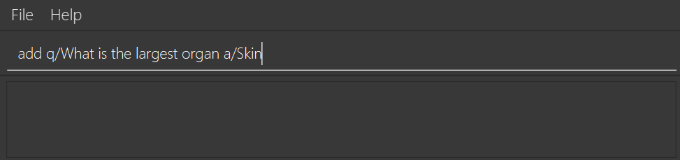

Overview
Know-It-All is a flashcard application that helps users store and organise their learning material. With an easy to use interface and a storage solution that supports content sharing, Know-It-All is designed to help students perform rote learning more efficiently. From cramming in between lessons to focused study, the in-built test session boosts the effectiveness of repetition and recall for memorisation. The user interacts with it using a CLI, and it has a GUI created with JavaFX. It is written in Java, and has about 10 kLoC.
My role involved the restructuring of the model and logic components of the original addressbook application, as well as implementing flashcard creation and management for Know-It-All. A more detailed breakdown of my contributions are detailed below, together with my additions to the user and developer guides.
Summary of Contributions
-
Major enhancement: implemented flashcard creation and management
-
What it does: Allows users to create, edit and delete different kinds of flashcards.
-
Justification: This is a core feature of the project, as users will be spending a large portion of their time interacting with the flashcards they have created or imported.
-
Highlights:
-
Users can create 2 different types of flashcards, Single-answer cards and MCQ cards. This provides greater versatility in how users choose to structure their learning material through the flashcards.
-
Users can easily convert between both types of cards by simply adding or removing MCQ options.
-
Users have the option to include a hint for each flashcard.
-
-
-
Minor enhancement: implemented testing for MCQ cards
-
What it does: For MCQ card test, allows users to input a number corresponding to the options available for an MCQ card, instead of having to input the entire answer.
-
Justification: Provides greater flexibility in the way users can interact with test sessions.
-
Highlights: MCQ card options are randomized every time the card is tested, thus preventing users from simply memorizing the correct option number.
-
-
Code contributed: [Collated code]
-
Other contributions:
Contributions to the User Guide
Given below are sections I contributed to the User Guide. They showcase my ability to write documentation targeting end-users. |
Adding a flashcard : add
Adds a flashcard to the current folder. Know-It-All supports 2 types of flashcards: Single answer cards and MCQ cards.
Format (Single answer): add q/QUESTION a/ANSWER [h/HINT]
Format (MCQ): add q/QUESTION a/ANSWER [i/INCORRECT_OPTION]… [h/HINT]
-
A card can have at most 1 hint (including 0)
-
If multiple hints are included in the command, only the last hint will be added to the card
-
Hints are currently restricted to alphanumerical characters and spaces only
-
A card can have any number of incorrect options to denote an MCQ card
-
A card with 0 incorrect options will automatically be denoted as a Single answer card
Examples:
-
add q/Hello? a/World -
add q/The cat _ on the mat a/sat h/poetry -
add q/What is the powerhouse of the cell? a/mitochondria i/cell wall i/nucleus h/biology -
add q/The Hippocrates Oath states to Do no _? a/harm h/4 letters h/Rhymes with farm
Creates a card withhint"Rhymes with farm".
Editing a flashcard : edit
Edits the flashcard specified by the index in the current folder.
Format: edit i/INDEX [q/QUESTION] [a/ANSWER] [h/HINT]
-
Edits the card at the specified
INDEX. The index refers to the index number shown in the displayed card list. The index must be a positive integer 1, 2, 3, … -
At least one of the optional fields must be provided.
-
Existing values will be updated to the input values.
-
(MCQ cards) When editing incorrect options, the existing incorrect options of the card will be removed i.e adding of options is not cumulative.
-
You can remove the card’s hint by typing
h/without specifying any hint after it.
Examples:
-
edit 1 a/Skin h/
Edits the answer of the 1st card to be 'Skin' and removes the hint associated, if any. -
edit 2 h/history q/Who discovered Penicillin? a/Alexander Fleming
Edits the hint, question and answer of the 2nd card respectively.
Contributions to the Developer Guide
Given below are sections I contributed to the Developer Guide. They showcase my ability to write technical documentation and the technical depth of my contributions to the project. |
Cards
Current Implementation
The Card is one of the core aspects of the application. Cards are the result of morphing of the Person class from the original AddressBook model. The implementation incorporates the Logic and Model components.
Model
To allow users to manage Cards, the following methods are available via the Model component:
-
ModelManager#addCard(Card card)- Adds a new card to the currently activeVersionedCardFolderfolder -
ModelManager#setCard(Card target, Card editedCard)- Edits the information of a target card in the currently active folder -
ModelManager#deleteCard(Card target)- Deletes the target card from the currently active folder -
ModelManager#hasCard(Card card)- Checks if a card is already present in the currently active folder
Example Usage
-
User is in the
Organsfolder and wants to add a new card, with question 'What is the largest organ?' and answer 'Skin'. This is done by typingadd q/What is the largest organ? a/Skin.
-
Upon execution, the
AddCommandchecks if the card to be added is already present in the current folder. If so, an exception is thrown.
-
-
The
AddCommandthen calls theModelManager#addCard(Card card)method. -
The new card will then be added to the active
VersionedCardFolder. -
If the user is not inside a folder, or if the card to add already exists inside the current folder, the
addCommandwill throw aCommandException.
The following sequence diagram demonstrates how AddCommand works.

Design Considerations
Aspect: How to represent options for MCQ cards
-
Alternative 1 (current choice): Maintain a set of
Optionobjects to represent incorrect options, separate from theAnswerfield of eachCard.-
Pros: Simple to implement, easy to convert the card type between MCQ and Single-answer, requires the least amount of implementation changes to
Card. -
Cons: Single-answer cards still have to maintain an empty
Optionset.
-
-
Alternative 2: Maintain 2 separate subclasses of
Card, one for Single-answer and another for MCQ.-
Pros: More correct implementation.
-
Cons: Harder to implement.
-
Glossary
Card Score: The number of correct answers divided by the number of attempts for a single card. When the user is tested on a card, this number is automatically calculated and recorded.
Flashcard/Card: An object containing a single question and answer, and optionally, hints. There are 2 types of cards, Single-answer and MCQ. MCQ cards feature incorrect options in addition to the card answer, while Single-answer cards do not.
Folder Score: The average of all card scores in a folder after a test session. This number is automatically recorded after each test session.